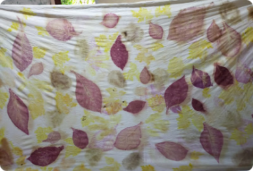

Melukis dengan Alam: Memahami
Teknik dan
Keajaiban di Balik Ecoprint
Ecoprint, seni kreatif yang memanfaatkan keindahan alam untuk
menciptakan desain unik pada tekstil. Ecoprint menghadirkan
keajaiban alam ke dalam kain, memadukan keindahan artistik dengan
kesadaran akan keberlanjutan.
Pounding
Proses: Daun, bunga, atau bagian
tumbuhan lain dipukul-pukul di atas kain yang telah direndam
dalam larutan mordant.
Mordant: Larutan mordant
digunakan untuk membantu menetapkan warna pada kain.
Hasil: Teknik ini menghasilkan
pola yang unik karena bentuk dan tekstur tumbuhan tertanam
dalam serat kain.
Steaming

Proses: Daun, bunga, atau bagian
tumbuhan lain diatur di atas kain yang telah direndam dalam
larutan mordant, kemudian dikukus.
Mordant:Larutan mordant membantu
mengikat warna pada serat kain selama proses pengukusan.
Hasil: Pengukusan menciptakan
transfer warna dan pola alami ke kain.
Fermentasi
Proses: Daun, bunga, atau bagian
tumbuhan lain dibiarkan terfermentasi selama beberapa hari di
atas kain yang telah direndam dalam larutan mordant.
Mordant: Larutan mordant membantu
memperkuat ikatan antara warna dan serat kain.
Hasil: Proses fermentasi
memberikan karakteristik unik pada warna dan pola pada kain.
Iron Blanket
Proses: Daun, bunga, atau bagian
tumbuhan lain diletakkan di atas kain yang telah direndam
dalam larutan mordant, lalu ditutup dengan sehelai kain besi.
Mordant: Larutan mordant membantu
memastikan perlekatan warna pada kain.
Hasil: Pola dan warna ditransfer
ke kain melalui proses oksidasi dengan bantuan panas dan logam
besi.
Bundle Dyeing
Proses: Kain diikat dengan bahan
tumbuhan menggunakan tali atau benang sebelum direndam dalam
larutan mordant
Mordant: Larutan mordant
digunakan untuk memastikan warna menempel pada kain dengan
baik.
Hasil: Teknik ini menciptakan
pola dan variasi warna yang unik di sepanjang kain.
Shibori
Proses: Kain dilipat, diikat,
atau diberi tekanan sebelum diwarnai, menciptakan pola
geometris atau abstrak.
Mordant: Larutan mordant membantu
menetapkan warna pada kain selama proses pewarnaan.
Hasil: Pola yang dihasilkan oleh
teknik ini bergantung pada cara kain dilipat dan diikat
sebelum diwarnai.